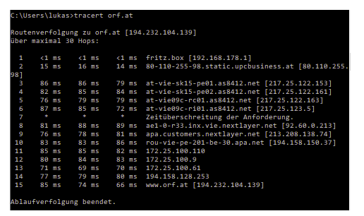
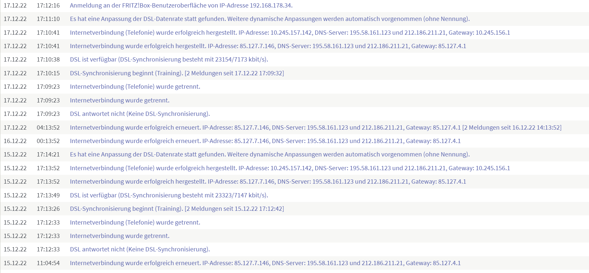

Hallo,
seit ca. 2 Wochen habe ich durchgehend einen Ping > 80 ms.
Alle möglichen Speedtests die man so findet sind sich da einig (meist ~ 90 ms).
www.wieistmeineip.at/speedtest 92ms
www.geschwindigkeit.at/ping-test/ 83ms
Download und Uplaod sind so wie immer bei ca. 20 bzw. 5 Mbit/s
Habe das Ping Problem sowohl am Standrechner mit LAN und auf mobilen Geräten über WLAN.
DSL-Informationen auf der Fritzbox sehen meiner Meinung nach unauffällig aus.
Bin kein Experte aber das tracert sieht für mich so aus als entsteht die Latenz zwischen 80.110.255.98 und 217.25.112.153.

Hoffe mir kann jemand helfen.
Im Setup hat sich seit 2 Jahren nichts geändert und bin einen Ping von ca. 30 gewöhnt.
Lg Lukas
Hallo @Luu97 ,
doofe Frage: wenn du nichts geändert hast und der Ping nun höher ist - hast du mal dein Modem neu gestartet. Alle Kabel einmal ab- und wieder angesteckt? Hast du zu unterschiedlichen Tageszeiten gemessen (wegen möglicher Auslastung)?
Infos zu High Pings findest du auch hier: https://blog.magenta.at/entertainment/gaming/high-ping-vermeiden
LG JD.
Hallo
@Jonathan Dorian
,
neu gestartet und alle Kabel ab- und angesteckt habe ich schon mehrmals gemacht.
Ich war die letzten Tage jetzt nicht oft zu Hause. In den nächsten Tagen werde ich den Ping zu allen Tageszeiten immer wieder einmal prüfen. Aktuell habe ich das Problem scheinbar nicht und der Ping ist bei ~30 ms.
In den letzten Tagen hat sich ein neues Phänomen ereignet, dass 2 mal das Internet einfach weg war, ohne dass irgendetwas bei den Kabeln oder dem Modem gemacht wurde. (Gerade vor 10 Minuten auch wieder)
In den FritxBox-Logs ist "DSL antwortet nicht" zu finden.

Hatte ich in den letzten 3 Jahren auch noch nie..
Lg Lukas
Hmmmm....
Das klingt eher nach einem Thema bei der Zuleitung und wenn das Internet sogar ausfällt, könnte der Grund sein, dass die Leitung nicht mehr synchron ist. Bitte check mal die Zuleitung beim DSL Kabel. Stecker kontrollieren und ansonsten sollte mal ein Techniker das Rauschen auf der Leitung austesten.
Bitte sprich das mal explizit bei der Hotline an - dass die Leitung zum Modem geprüft werden soll.
Hallo @Luu97
ich habe aktuell genau die selben Probleme inklusive enorm hohen Latenzzeiten beim Spielen. Was ist dein aktueller Stand der Dinge? Hast du das Problem beheben können, wenn ja, wie?
Vielen Dank im Voraus!
Hallo @elias99 ,
du schreibst hier , dass der höhere Ping nur abends (19-22) Uhr auftritt. Ist das nur bei diesem Game so oder hast du das auch, wenn du zum Beispiel Google anpingst? Schick dazu mal einen Screenshot hier zu.
LG JD.
vor 2 Stunden schrieb Jonathan Dorian:
Hallo @Jonathan Dorian
Nein, der Ping tritt in allen Games auf. Ich habe während dem Spielen einen Ping auf "google.at" laufen lassen, dieser ist aber unauffällig.
Meine Vermutung ist, dass es sich hierbei um Routing-Probleme handelt. Sollte sich das bewahrheiten, habe ich als Endverbraucher leider keine Möglichkeit diesen Fehler zu beheben.
Am 16.3.2023 um 09:18 schrieb Jonathan Dorian:
Das Problem mit höherem Ping zu bestimmten Servern am Abend besteht bei mir im selben Zeitraum.
Siehe hier:
{kind=link}
{kind=link}
{kind=link}